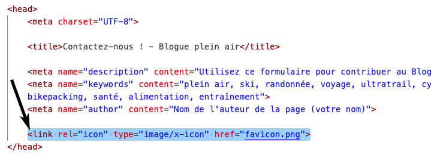
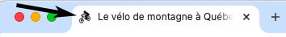

Informations ignorées par les navigateurs
Certaines informations d'un document HTML sont ignorées ou ont peu d'impact sur la présentation du document lorsque ce dernier est affiché par un navigateur graphique.
Voici quelques exemples d'informations ignorées par les navigateurs.
Retour à la ligne
Dans un document HTML, les retours à la ligne sont traités comme des espaces.
Le texte et les éléments se suivent jusqu'à l'arrivée d'un éléments de type bloc comme p ou h2 dans le flux du texte.
See the Pen c02-html04 by Frédéric Lacroix (@frlacroix) on CodePen.
Tabulations et espaces multiples
Lorsque qu'un navigateur rencontre plusieurs espaces blancs consécutifs dans un document HTML, il les affiche comme un seul espace. L'exemple suivant montre que les espaces multiples ajoutés entre les lettres dans le HTML (à gauche) ne sont pas reproduite à l'affichage (à droite):
See the Pen c02-html01 by Frédéric Lacroix (@frlacroix) on CodePen.
Éléments <p> vides
Les éléments de paragraphes vides (<p></p> ou <p> seul), qui ne contiennent pas de texte, sont considérés comme redondants par tous les navigateurs et sont ignorés à l'affichage. Par exemple, ce paragraphe que vous lisez est suivi d'un paragraphe vide qui ne s'affiche pas dans le navigateur.
Vous constaterez parfois l'utilisation d'une astuce pour créer des espaces entre les paragraphes, soit l'insertion d'un paragraphe contenant une espace insécable, comme ceci: <p> </p>. Il s'agit d'une pratique à proscrire, car un élément p annonce du contenu, d'une part, et, d'autre part, les règles de style permettent de faire ce travail de manière plus efficace et systématique.
See the Pen c02-html05 by Frédéric Lacroix (@frlacroix) on CodePen.
Texte en commentaire dans le HTML
Les navigateurs n'affichent pas le texte placé entre les balises spéciales suivantes:
<!-- et -->
Ces balises servent à inscrire un commentaire dans le code HTML, par exemple :
<!-- Le menu principal débute ici. FL -->
Une espace doit être placée après l'élément initial et avant l'élément final.
See the Pen c02-html03 by Frédéric Lacroix (@frlacroix) on CodePen.
On peut utiliser les balises de commentaire HTML pour masquer temporairement du contenu afin d'éviter de le retirer définitivement du document, et cela pour des fins de test ou de restructuration.
Insérer un favicon dans un document HTML
Le favicon est l'icône qui apparaît à la gauche du contenu de l'élément title dans l'entête de l'onglet d'un navigateur ainsi que dans la liste de favoris d'un utilisateur.
Pour le faire afficher, il suffit d'insérer une image carrée de 48 x 48px (ou un multiple, comme 96 x 96px ou 144 x 144px, etc.) à la racine de votre dossier de site web (car son url doit être stable) et de lier cette image par un élément link.
L'élément link doit être placé dans l'élément head et comporter les attributs suivants :
Code

Résultat

Éléments HTML : saut de ligne et séparateur
| Élément | Description |
|---|---|
| <br> | Saut de ligne : pour forcer un changement de ligne, par exemple entre les vers d'un poème ou d'une chanson. On ne doit pas utiliser cet élément pour créer des paragraphes ou des espaces entre les paragraphes. Essayez-le! |
| <hr> | Séparateur : pour créer une séparation entre deux blocs de contenu distincts. Par exemple, pour souligner un changement de sujet dans un long texte (comme des chapitres) ou un changement de scène dans un scénario. Essayez-le! |
Éléments HTML : les listes
| Élément | Description |
|---|---|
| ul | Liste non ordonnée (utilisée lorsqu'il n'y a pas de notion d'ordre entre les éléments de liste. Exemple: boutons de navigation.) Essayez-le! |
| ol | Liste ordonnée (utilisée lorsqu'il y a un ordre explicite entre les éléments de liste; exemple: les étapes de réalisation d'une recette) Essayez-le! |
| li | Élément de liste Essayez-le! |
| dl | Liste de définitions (utilisée lorsque les éléments de liste se déclinent en deux éléments: terme et définition) Essayez-le! |
| dt | Terme d'une liste de définition Essayez-le! |
| dd | Définition d'une liste de définition Essayez-le! |
Liste non ordonnée <ul>
Les éléments d'une liste non ordonnée sont marqués par une puce. La liste représente une série d'éléments qui n'ont pas d'ordre particuliers, comme les ingrédients d'une recette par exemple.
See the Pen c02-liste01 by Frédéric Lacroix (@frlacroix) on CodePen.
Liste ordonnée <ol>
Chaque élément d'une liste ordonnée possède un numéro. La liste peut représenter par exemple les étapes d'une procédure qui doivent être effectuées dans l'ordre.
See the Pen c02-liste02 by Frédéric Lacroix (@frlacroix) on CodePen.
Liste de définition <dl>, <dt> et <dd>
Ces listes sont constituées d'un ensemble de termes accompagnés de leurs définition.
See the Pen c02-liste03 by Frédéric Lacroix (@frlacroix) on CodePen.
Liste imbriquée
Il est possible d'imbriquer une liste dans une autre. Remarquez bien la syntaxe: la liste imbriquée se trouve à l'intérieur de l'élément de liste auquelle elle est reliée.
See the Pen c02-liste04 by Frédéric Lacroix (@frlacroix) on CodePen.
Votre lecture se termine ici.
Avant le prochain cours, assurez-vous d’avoir réalisé les travaux formatifs et notez les questions qui vous sont venues pendant votre lecture.